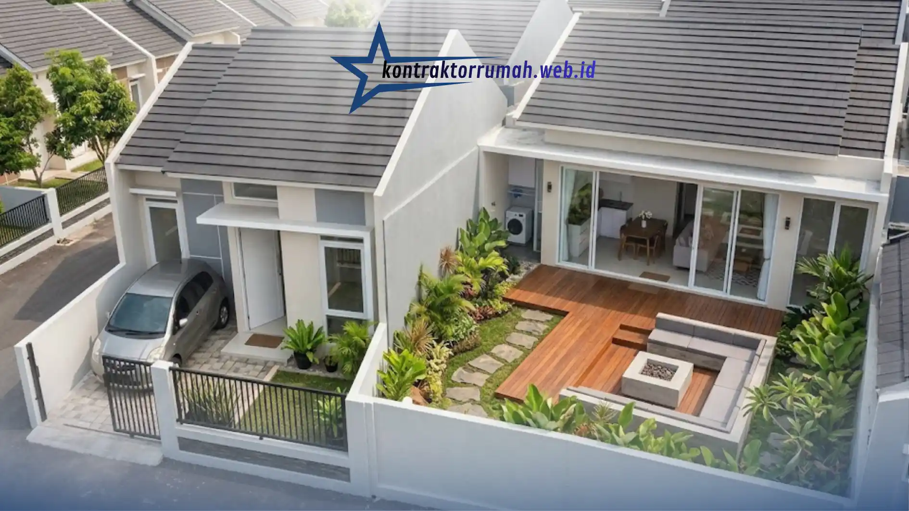

Rumah subsidi type 36 pada umumnya dibangun dengan spesifikasi dasar yang cukup sederhana. Dapur dan pagar sering kali menjadi dua bagian rumah yang paling ingin diubah oleh pemilik, karena kondisi bawaannya masih terbatas dari sisi fungsi maupun tampilan. Artikel ini membahas secara menyeluruh berbagai pertimbangan dan inspirasi renovasi untuk kedua area tersebut, mulai dari perencanaan tata ruang hingga pemilihan material yang realistis untuk lahan dan bujet terbatas.
Poin Penting
- Dapur dan pagar adalah dua area rumah subsidi type 36 yang paling sering direnovasi lebih dulu karena spesifikasi bawaannya masih terbatas.
- Pola tata letak satu garis (single line) atau L-shape paling praktis untuk dapur sempit tanpa mengorbankan ruang gerak.
- Keramik dan HPL jadi pilihan material dapur yang tahan air, mudah dibersihkan, dan ramah bujet.
- Besi hollow galvanis dan beton pracetak jadi material pagar yang tahan cuaca dengan perawatan minim.
- Tinggi pagar ideal rumah subsidi berkisar 1 – 1,5 meter agar tetap aman tanpa membuat rumah terkesan tertutup.
Mengapa Dapur dan Pagar Sering Direnovasi Lebih Dulu
Pada rumah subsidi type 36, dapur biasanya dibangun dengan ukuran kecil dan area terbuka tanpa sekat permanen, sementara pagar sering kali belum tersedia sama sekali atau hanya berupa pembatas sederhana. Kedua kondisi ini membuat penghuni merasa perlu segera melakukan penyesuaian, baik untuk alasan kenyamanan sehari-hari maupun keamanan rumah.
Dapur yang sempit dan minim sirkulasi udara dapat mengganggu aktivitas memasak, terutama bagi keluarga dengan mobilitas dapur yang tinggi. Di sisi lain, ketiadaan pagar membuat area depan rumah terasa kurang privat dan rentan dari sisi keamanan, terutama di lingkungan padat penduduk.
Konsep Renovasi Dapur untuk Rumah Subsidi Type 36
Bagaimana Menata Dapur Sempit agar Tetap Fungsional?
Dapur sempit pada rumah subsidi tetap dapat ditata secara fungsional dengan mengikuti pola tata letak satu garis atau L-shape, memaksimalkan kabinet gantung, dan memilih perabot berukuran ringkas sesuai kebutuhan harian keluarga.
Pola tata letak satu garis (single line kitchen) umumnya menjadi pilihan paling praktis karena tidak membutuhkan banyak ruang gerak tambahan. Semua area kerja, mulai dari tempat cuci piring, area memasak, hingga tempat penyimpanan, disusun berjajar pada satu sisi dinding.
Jika lebar dapur memungkinkan, pola L-shape juga bisa dipertimbangkan karena memberi lebih banyak bidang kerja tanpa mengorbankan ruang gerak di tengah ruangan. Pola ini cocok untuk dapur yang menyatu dengan area cuci dan jemur di rumah subsidi.
Beberapa hal yang umumnya dipertimbangkan saat menata ulang dapur sempit:
- Menempatkan kabinet gantung di atas area memasak untuk menghemat ruang lantai
- Memilih meja dapur multifungsi yang bisa dilipat saat tidak digunakan
- Memaksimalkan pencahayaan alami dari ventilasi atau jendela dapur
- Menyesuaikan tinggi kabinet dengan postur pengguna utama dapur
- Memilih warna terang pada dinding dan kabinet agar ruangan terasa lebih lapang
Material Apa yang Cocok untuk Dapur Rumah Subsidi?
Material yang umumnya cocok untuk dapur rumah subsidi adalah material yang tahan air, mudah dibersihkan, dan memiliki harga yang relatif terjangkau, seperti keramik pada dinding dan lantai serta HPL pada kabinet.
Area dapur merupakan ruangan dengan tingkat kelembapan dan potensi noda yang tinggi, sehingga pemilihan material perlu mempertimbangkan aspek ketahanan jangka panjang, bukan hanya tampilan. Keramik dinding di area belakang kompor (backsplash) membantu melindungi tembok dari noda minyak dan mempermudah proses pembersihan.
Untuk kabinet dapur, material HPL (High Pressure Laminate) sering dipilih karena permukaannya tahan gores dan lembap, dengan pilihan warna dan motif yang cukup beragam. Sebagai alternatif yang lebih hemat, multipleks dengan lapisan cat duco juga dapat digunakan, meski perlu perawatan tambahan agar tidak mudah lembap.
Bagaimana Menambah Sirkulasi Udara di Dapur yang Minim Ventilasi?
Sirkulasi udara di dapur rumah subsidi dapat ditingkatkan dengan menambahkan ventilasi silang, memasang exhaust fan, atau membuat bukaan udara tambahan di bagian atas dinding dapur.
Banyak dapur rumah subsidi awalnya hanya memiliki satu sisi bukaan udara, sehingga asap dan bau memasak cenderung terperangkap di dalam ruangan. Penambahan ventilasi silang pada sisi berlawanan dapat membantu udara panas dan asap keluar lebih cepat.
Jika renovasi struktural tidak memungkinkan, pemasangan exhaust fan di area dekat kompor menjadi solusi praktis. Alat ini bekerja menyedot udara panas dan asap keluar ruangan sehingga dapur tetap terasa nyaman digunakan meski dalam waktu memasak yang lama.
Inspirasi Desain Dapur Rumah Subsidi Type 36
Dapur Minimalis dengan Kabinet Warna Netral
Konsep ini mengandalkan kabinet berwarna putih atau abu-abu muda yang dipadukan dengan meja dapur berbahan granit tiruan atau HPL bertekstur marmer. Kombinasi warna netral membuat dapur terlihat lebih bersih dan luas meskipun ukurannya terbatas.
Dapur Semi Terbuka ke Area Belakang
Beberapa pemilik rumah subsidi memilih membuka sekat antara dapur dan area cuci di belakang rumah agar sirkulasi udara lebih lancar. Konsep semi terbuka ini juga membantu memperluas kesan ruang tanpa perlu menambah luas bangunan.

Konsep dapur semi terbuka dan pagar minimalis membantu rumah subsidi type 36 terasa lebih lapang tanpa menambah luas bangunan.
Dapur dengan Rak Terbuka untuk Efisiensi Ruang
Sebagai alternatif kabinet tertutup yang membutuhkan biaya lebih besar, rak terbuka dari material kayu atau besi hollow dapat digunakan untuk menyimpan peralatan masak sekaligus mempercantik tampilan dapur dengan gaya yang lebih kasual.
Konsep Renovasi Pagar untuk Rumah Subsidi Type 36
Model Pagar Apa yang Cocok untuk Rumah Subsidi dengan Lahan Terbatas?
Model pagar yang umumnya cocok untuk rumah subsidi dengan lahan terbatas adalah pagar minimalis rendah dari besi hollow atau kombinasi pagar tembok pendek dengan pagar besi, karena tidak memakan banyak ruang dan tetap memberi kesan terbuka.
Lahan depan rumah subsidi biasanya tidak terlalu luas, sehingga pemilihan model pagar perlu memperhatikan keseimbangan antara fungsi keamanan dan kesan visual rumah agar tidak terasa terlalu tertutup atau sempit.
Pagar besi hollow dengan desain garis vertikal atau horizontal menjadi pilihan populer karena memberi kesan modern, minim perawatan, dan tetap memungkinkan sirkulasi udara serta pandangan ke arah rumah. Sebagai variasi, kombinasi pagar tembok setinggi sekitar satu meter dengan tambahan railing besi di atasnya juga banyak digunakan untuk menambah kesan kokoh sekaligus tetap terbuka.
Material Apa yang Direkomendasikan untuk Pagar Rumah Subsidi?
Material yang umum direkomendasikan untuk pagar rumah subsidi adalah besi hollow galvanis dan pagar beton pracetak, karena keduanya relatif tahan cuaca dan tidak membutuhkan perawatan intensif.
Besi hollow galvanis dipilih karena memiliki lapisan anti karat yang membuatnya lebih tahan terhadap paparan hujan dan panas dibandingkan besi biasa. Material ini juga tersedia dalam berbagai ukuran sehingga dapat disesuaikan dengan bujet renovasi.
Sebagai alternatif, pagar beton pracetak menawarkan tampilan yang lebih kokoh dan proses pemasangan yang relatif lebih cepat dibandingkan pengecoran manual, meski umumnya membutuhkan biaya awal yang sedikit lebih tinggi.
Bagaimana Menentukan Tinggi Pagar yang Ideal untuk Rumah Subsidi?
Tinggi pagar rumah subsidi umumnya disesuaikan antara satu hingga satu setengah meter agar tetap memberi rasa aman tanpa membuat rumah terlihat tertutup total dari lingkungan sekitar.
Pagar yang terlalu tinggi berpotensi membuat rumah type 36 yang sudah mungil terlihat semakin sempit dan tertutup. Sebaliknya, pagar yang terlalu rendah kurang optimal dari sisi keamanan. Oleh karena itu, kombinasi tembok pendek dengan railing besi di bagian atas sering dianggap sebagai solusi tengah yang ideal untuk rumah subsidi.
Inspirasi Desain Pagar Rumah Subsidi Type 36
Pagar Besi Hollow Garis Vertikal
Desain ini memberikan kesan modern dan ramping, cocok untuk rumah dengan fasad minimalis. Celah antar besi yang tidak terlalu rapat juga membantu menjaga sirkulasi udara di halaman depan.
Pagar Kombinasi Tembok dan Railing
Kombinasi ini banyak dipilih karena memberi kesan lebih kokoh dan aman, sekaligus tetap menampilkan bagian rumah dari luar. Bagian tembok dapat difinishing dengan cat atau batu alam tempel sesuai bujet yang tersedia.
Pagar Dorong (Sliding Gate) untuk Efisiensi Lahan
Untuk rumah subsidi dengan lebar lahan depan yang terbatas, pagar dorong menjadi solusi agar tidak membutuhkan ruang ayun pintu seperti pagar model buka-tutup biasa. Model ini juga memudahkan akses kendaraan roda dua maupun roda empat.
Hal yang Perlu Dipertimbangkan Sebelum Renovasi
Sebelum memulai renovasi dapur maupun pagar, penting untuk memperhitungkan kondisi struktur bangunan yang sudah ada, batas lahan resmi sesuai sertifikat, serta kebutuhan izin renovasi jika diperlukan oleh pengelola perumahan atau pemerintah setempat.
Selain itu, pemilik rumah disarankan untuk menyesuaikan rencana renovasi dengan bujet yang tersedia secara realistis, mengingat harga material dan biaya jasa dapat bervariasi tergantung lokasi dan kondisi lapangan. Berkonsultasi dengan tukang atau kontraktor berpengalaman di area setempat juga membantu memastikan hasil renovasi sesuai dengan kondisi struktur rumah subsidi yang umumnya memiliki spesifikasi standar.
Catatan dari tim Kontraktor Rumah: Kontraktor Rumah beroperasi sebagai mitra konstruksi berbadan hukum PT resmi, siap membantu perencanaan renovasi dapur dan pagar rumah subsidi type 36 mulai dari survei kondisi lapangan, penyusunan RAB transparan, hingga eksekusi oleh tenaga kerja berpengalaman. Pemilihan material yang tahan lama namun tetap ramah bujet, seperti keramik dan HPL untuk dapur serta besi hollow galvanis untuk pagar, menjadi standar kerja tim dalam menangani proyek renovasi rumah subsidi di kawasan Jabodetabek.
FAQ Seputar Renovasi Dapur & Pagar Rumah Subsidi
Renovasi dapur dan pagar rumah subsidi type 36 sebaiknya dimulai dari perencanaan tata ruang yang realistis sesuai luas lahan yang tersedia. Pemilihan material yang tahan lama namun tetap ramah bujet, seperti keramik dan HPL untuk dapur, serta besi hollow galvanis untuk pagar, dapat membantu hasil renovasi lebih awet tanpa mengorbankan tampilan. Konsultasi dengan tenaga kerja yang berpengalaman di lingkungan setempat juga disarankan agar hasil renovasi sesuai dengan kondisi struktur rumah yang sebenarnya.